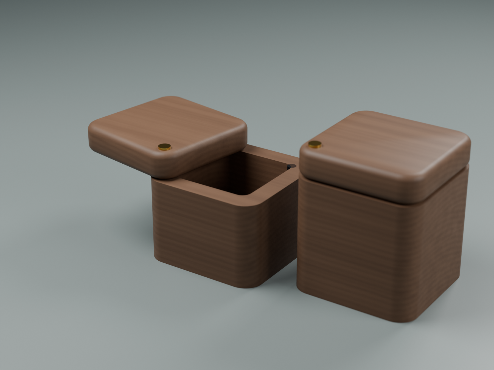
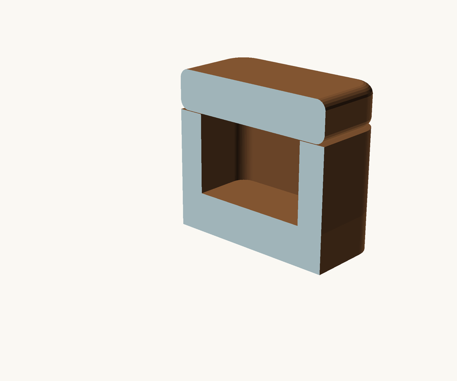
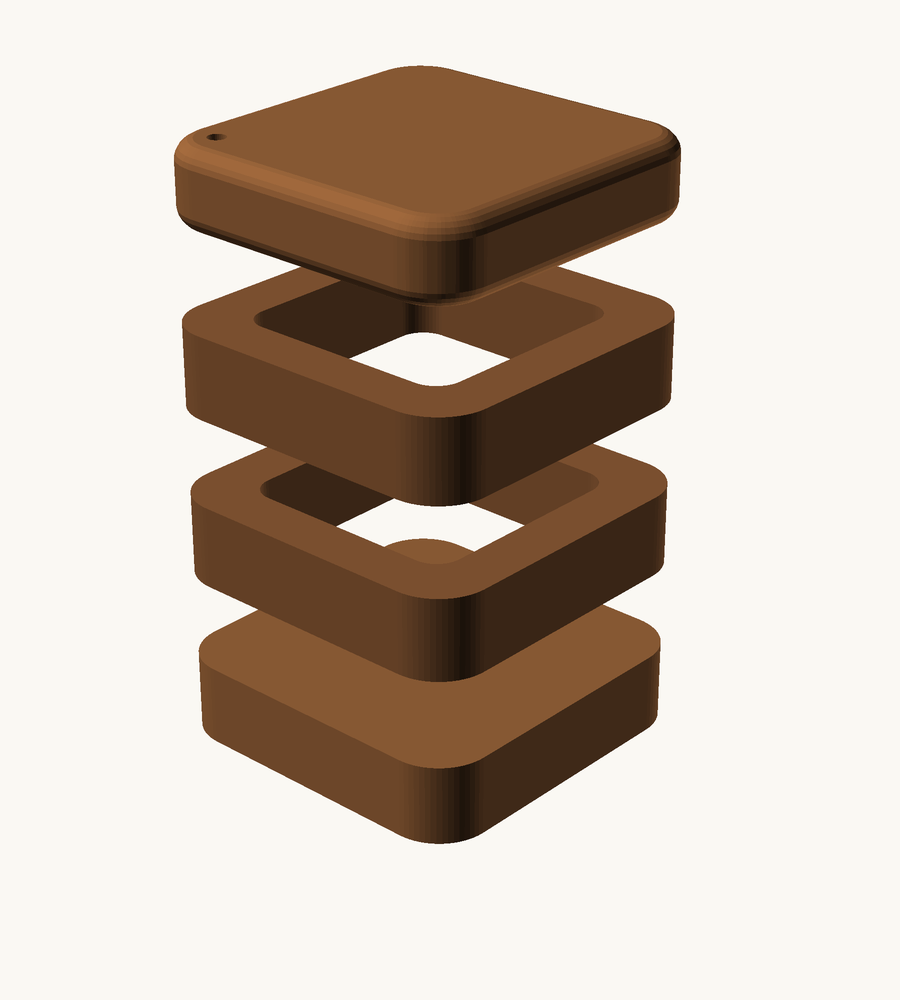

Salt boxes — laminated hardwood, swivelling lid
A pair. 3-1/4" square, differing only in height. Stack-laminated from hardwood offcuts, with generously rounded corners and a lid that pivots on a brass screw.

| MSG | Sugar | |
|---|---|---|
| Middle layers | 2 | 3 |
| Height | 3" | 3-3/4" |
| Cavity | 2-1/4" sq × 1-1/2" deep | 2-1/4" sq × 2-1/4" deep |
| Holds | ~123 ml (1/2 cup) | ~185 ml (3/4 cup) |
The height difference is the label — reaching for the wrong one mid-cook is the failure mode a matched pair guarantees.
The proportions
The first version had a 2-1/2" × 3/4" cavity, which is a tray, not a well. A powder spread that thin is something you scrape at rather than pinch. Same volume, three times the depth is the fix: narrower footprint, more layers.
Corners
Outside: 1/2" radius, which is generous on purpose. A small ease on an object this size just gives you a slightly less sharp box; at 1/2" the corners become quarter-cylinders and the silhouette changes. This is also the edge your hand meets several times a day, which is why it's rounded rather than chamfered — a chamfer gives you two arrises where a roundover gives you none.
Inside: 1/4" radius, and it's free. A 1/2" cutter physically cannot leave anything tighter, so a square template hands you rounded inside corners at no cost. Nothing to decide.
They don't match, and they can't. Offsetting a rounded square inward *reduces* the corner radius — a 1/2" outer radius with 1/2" walls would want square inner corners, which no router cuts. The mismatch is geometry, not compromise, and it's why the wall is thicker at the corners (about 0.6") than at the faces (1/2"). That extra corner material is what the pivot screw lands in.
The lid is rounded on every edge, not just the vertical corners — it's what the hand actually picks up.

Why laminated and not hollowed from a blank
A solid block would keep the figure continuous, which matters on a small object. But a blind pocket that deep can't be template-routed: the bearing has to sit inside the template, and the deeper you plunge the higher it rides, so past about 1" there's nothing guiding the cut. The alternative — a 2-1/4" Forstner in a hand drill — wanders, and a cavity leaning 2° in a 3-1/4" box shows up as visibly uneven walls.
Cutting the cavity through each middle layer sidesteps both. One template pass per layer, dead square, no torque drama.
Cut the layers in sequence from one board and stack them in the order they came off. The figure runs on through the glue lines and they nearly vanish — you're unrolling the board and putting it back. That gets you most of the way to what a solid blank would have given you.
Making it

Ten pieces for the pair, all 3-1/4" square and all 3/4" thick — 2 bottoms, 2 lids, 5 middles. One thickness throughout means it all comes off the same board and nothing needs planing to size.
- Cut all blanks to 3-1/4" square.
- Rough the opening in each middle layer — plunge the router in the middle of the waste and work freehand at ~1/4" per pass, staying 1/8" inside the line.
- One template pass at full depth. The template is a frame: four strips of 1/4" hardboard assembled into a 2-1/4" square window, taped to the blank with double-sided tape. The bearing runs the inside of the window. It happens once, at full depth, because a pattern bit guides nothing at shallower plunges — fine here, since it's only removing a sixteenth.
- Glue up bottom + middles. Lid stays loose.
- Round the corners — block plane to a chamfer, knock off the two new arrises, then sand. Ten minutes for eight corners, and the slight irregularity looks right on something handmade. A 1/2" roundover bit works too but is fiddly hand-held on a block this size.
- Pivot: clearance hole through the lid, pilot into the corner post.
- Magnet and steel at the corner opposite the pivot.
- Oil and wax.
Hardware, and why it matters here
Brass or stainless for the pivot, never plain steel. Salt rusts a steel screw and bleeds a black stain into the surrounding wood that never comes out.
Seal the magnet. Neodymium magnets are nickel-plated and salt eats the plating. Epoxy it into its recess so it's capped.
Magnet to steel, not magnet to magnet — same holding force, and no way to get the polarity backwards.
Mineral oil and beeswax, not polyurethane. Food contact, and renewable when it dulls — which it will, because you'll be in it daily.
Wood
A salt box is the one project where good wood is affordable — a pair needs about a foot of 4/4 — one thickness, one board. This is where offcuts of something figured earn their keep. Maple takes a chamfer more crisply than almost anything; cherry darkens with handling, which on a daily object is a feature.
Views
L2_*.png / L3_*.png | MSG and sugar |
*_hero.png | closed |
*_open.png | lid swung on the pivot |
*_exploded.png | the layers |
*_section.png | wall thickness and cavity depth |